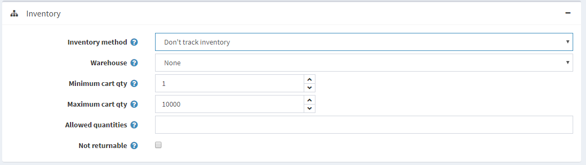
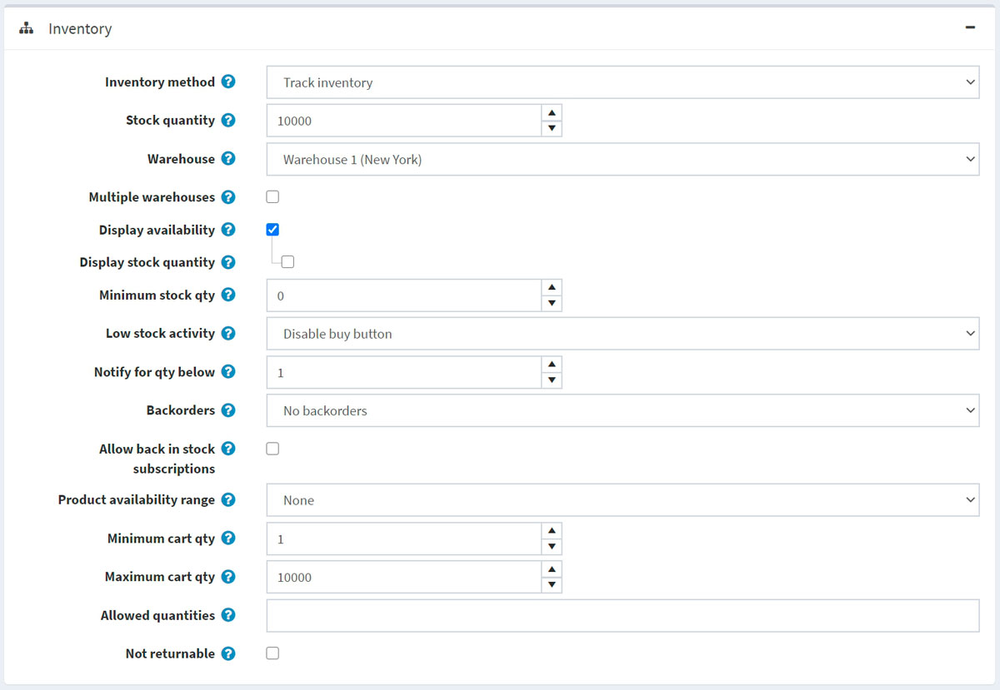
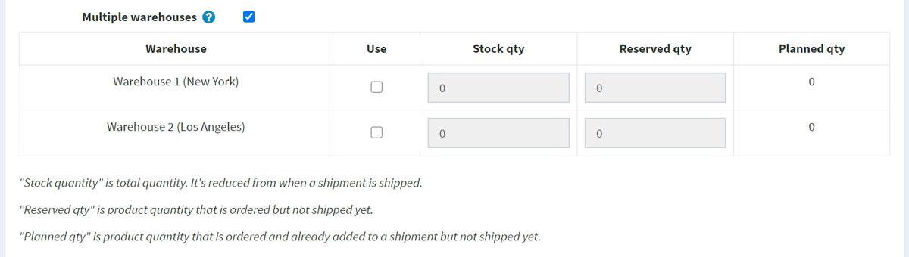
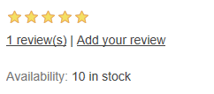
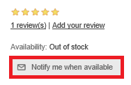
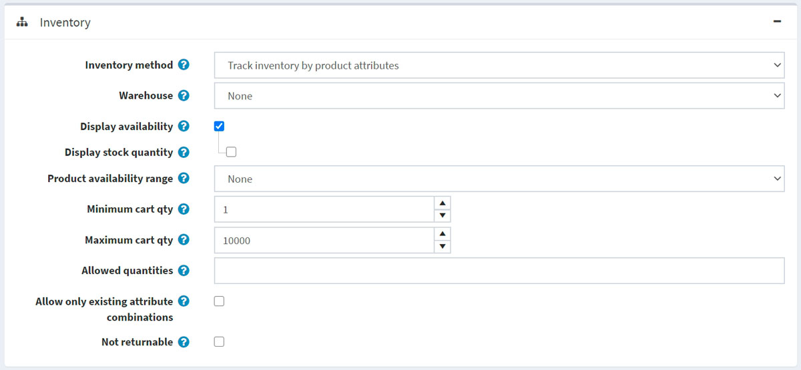
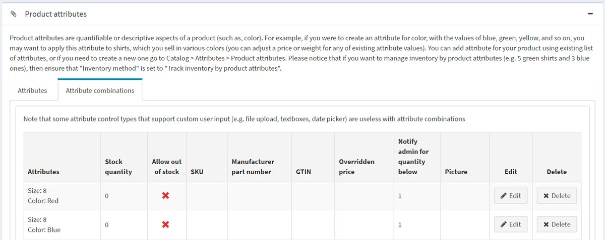
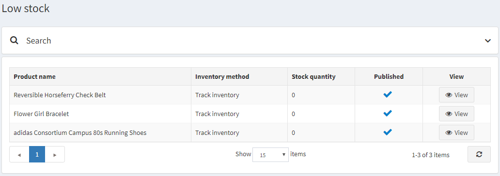

庫存管理
庫存管理是一種用於控制庫存水平的系統。在 nopCommerce 中，它包含了設定庫存以及追蹤低庫存量的功能。
若要設定庫存，請前往 目錄 → 商品 → 編輯商品。在 編輯商品詳情 視窗中，移至 庫存 面板。在此面板中，您可以選擇以下三種庫存管理方式之一：
在接下來的章節中，我們將探討這些方法之間的差異。
不追蹤庫存
有些商品可能不需要進行庫存追蹤。例如：服務、二手商品或客製化商品。在這種情況下，商店經營者可以選擇不追蹤，只要在 庫存方式 欄位中選擇 不追蹤庫存 選項即可。

在此情況下，商店經營者可以定義以下項目：
- 倉庫：在計算運費時將會使用此倉庫。請參閱 倉庫 章節以了解更多資訊。
- 最小購物車數量：允許放入顧客購物車的商品數量。例如，設定為 3，表示僅允許顧客購買 3 件（含）以上該商品。
- 最大購物車數量：允許放入顧客購物車的商品數量。例如，設定為 5，表示僅允許顧客購買 5 件（含）以下該商品。
- 在 允許數量 欄位中，輸入您希望限制此商品購買數量的清單，並以逗號分隔。顧客將會看到一個下拉式選單來選擇您在此輸入的數值，而不是透過文字輸入框自行填寫任何數量。
- 若此商品不可退貨，請勾選 不可退貨 核取方塊。在這種情況下，顧客將無法提交退貨請求。
追蹤庫存
如果需要進行庫存追蹤，商店擁有者可以在兩個選項中選擇一種 庫存方法：追蹤庫存（按商品）或 按商品屬性追蹤庫存。追蹤庫存 選項適用於那些沒有商品變體，僅需知道剩餘商品數量的商店。在本節中，我們將介紹 追蹤庫存 選項。 一旦選擇此選項，該區段將會展開並顯示新的欄位：

請依照下列方式設定庫存：
庫存數量 為總數量。每當訂單出貨時，此數量會隨之減少。
選擇計算運費時所使用的 倉庫。您可以在 設定 → 運送 → 倉庫 頁面管理倉庫。詳細資訊請參閱 倉庫 頁面。
如果您想要支援多個倉庫的運送與庫存管理，請勾選 多個倉庫 核取方塊。透過這種方式，您可以針對每個倉庫進行庫存管理：

如果您希望在此商品使用該倉庫，請點擊對應列中的 使用。- 輸入 庫存數量，即為總數量。每當訂單出貨時，此數量會隨之減少。
- 輸入 預留數量，這是指已訂購但尚未出貨或尚未加入出貨單的商品數量。
- 計畫數量 是指已訂購且已加入出貨單但尚未實際出貨的商品數量。
為了避免顧客下單後才發現商品缺貨，您可以採取某些行動。勾選 顯示庫存狀態 核取方塊，即可在前台網站顯示庫存狀況。
若有需要，勾選 顯示庫存數量 核取方塊，讓顧客能在商品詳細資訊頁面看到商品庫存數量（此核取方塊僅在勾選 顯示庫存狀態 後顯示）。下方的螢幕截圖展示了顧客在前台網站會看到的情形：

在 最低庫存數量 欄位中，輸入將觸發後續行動的最小值。
從 低庫存行為 下拉式清單中，選擇當庫存數量低於最低庫存數量時所採取的行動，如下所示：
- 無：商店擁有者可以選擇不採取任何行動。這表示顧客可以繼續訂購商品。
- 停用購買按鈕：當庫存不足時，購買按鈕會變為停用狀態。因此，顧客無法購買此商品，但仍能看見該商品存在於商店中。
- 取消發佈：商品將不再於商店中顯示。當商品即將完全停止販售時使用。
在 低於此數量時通知 欄位中，輸入一個數值，當庫存低於此數值時，系統會發送電子郵件通知管理員。
商店擁有者可以設定 缺貨訂單 (Backorders)，即購買當下無法立即履行的訂單。從缺貨訂單下拉式清單中，選擇所需的缺貨模式，如下所示：
- 不允許缺貨訂單：當沒有庫存時，顧客無法購買此商品。
- 允許數量低於 0：即使沒有庫存，顧客仍可購買此商品。
- 允許數量低於 0 並通知顧客：即使沒有庫存，顧客仍可購買此商品。此外，他們會收到包含以下訊息的通知：缺貨 - 已加入缺貨訂單，一旦到貨將立即出貨（此情況下也應啟用 顯示庫存狀態 選項）。
勾選 允許到貨通知訂閱，讓顧客能夠訂閱商品到貨通知，如下圖所示：

選擇當商品暫時無庫存時，要顯示給顧客看的 商品庫存狀態範圍。您可以在 設定 → 運送 → 日期與範圍 頁面的 商品庫存狀態範圍 面板中設定這些範圍。詳細資訊請參閱 日期與範圍 頁面。
最低購物車數量 是指顧客購物車中允許的數量，例如設定為 3，則僅允許顧客購買 3 件或更多的此商品。
最高購物車數量 是指顧客購物車中允許的數量，例如設定為 5，則僅允許顧客購買 5 件或更少的此商品。
在 允許數量 欄位中，輸入以逗號分隔的數量清單，限制此商品的購買數量。顧客將會看到一個下拉式選單來選擇您輸入的數值，而不是透過數量輸入框輸入任意數值。
如果此商品無法退貨，請勾選 不可退貨 核取方塊。在這種情況下，顧客將無法提交退貨請求。
依據商品屬性追蹤庫存
如果您有各種不同的商品屬性組合，且需要追蹤其庫存數量，請選擇「依據商品屬性追蹤庫存」(Track inventory by product attributes) 的庫存方法。 選擇此選項後，區塊將會展開並顯示新的欄位：

選擇計算運費時所使用的 倉庫 (Warehouse)。您可以在 設定 → 貨運 → 倉庫 頁面管理倉庫。詳細資訊請參閱 倉庫 頁面。
為了避免顧客下單後才發現商品缺貨，您可以採取某些措施。勾選 顯示庫存狀態 (Display availability) 核取方塊，以便在前台網站顯示庫存狀況。
若有需要，請勾選 顯示庫存數量 (Display stock quantity) 核取方塊，讓顧客可以在商品詳細資訊頁面看到商品庫存數量（此核取方塊僅在勾選 顯示庫存狀態 後才會顯示）。以下截圖示範了顧客在前台網站所看到的畫面：
選擇當商品目前無庫存時，要顯示給顧客看的 商品可用性範圍 (Product availability range)。您可以在 設定 → 貨運 → 日期與範圍 頁面的「商品可用性範圍」面板中設定可用性範圍。詳細資訊請參閱 日期與範圍 頁面。
購物車最少數量 (Minimum cart qty) 是指顧客購物車中允許的數量，例如設定為 3，代表顧客購買該商品時必須購買 3 個或以上。
購物車最多數量 (Maximum cart qty) 是指顧客購物車中允許的數量，例如設定為 5，代表顧客購買該商品時最多只能購買 5 個。
在 允許的數量 (Allowed quantities) 欄位中，輸入以逗號分隔的數量清單，限制此商品的購買數量。顧客將不會看到可以輸入任意數量的文字方塊，而是會看到一個包含您在此處輸入數值的下拉式選單。
勾選 僅允許現有的屬性組合 (Allow only existing attribute combinations)，則僅允許將庫存數量大於 0 的現有屬性組合加入購物車或願望清單。在此情況下，您必須建立所有現有庫存的商品屬性組合。
若此商品不可退貨，請勾選 不可退貨 (Not returnable) 核取方塊。在此情況下，顧客將無法提交退貨請求。
Note
若要為不同的屬性組合設定 庫存數量 (Stock quantity)，請前往編輯商品詳細資訊頁面中「商品屬性」面板的 屬性組合 (Attribute combinations) 索引標籤。在此索引標籤中，您可以定義是否針對特定屬性組合 允許缺貨 (Allow out of stock)，以利即使在商品缺貨時仍能核准訂單。

Tip
若要追蹤目前庫存不足的商品，請前往 報表 → 低庫存 (Reports → Low stock)。 低庫存報表包含目前庫存不足的商品清單，亦即庫存數量等於或小於商品詳細資訊頁面「庫存」區段中所設定之最低庫存數量的商品。

點擊 檢視 (View) 即可查看商品詳細資訊頁面，並於該處更改這些庫存設定。 關於 nopCommerce 報表的更多詳細資訊，請造訪 報表 頁面。